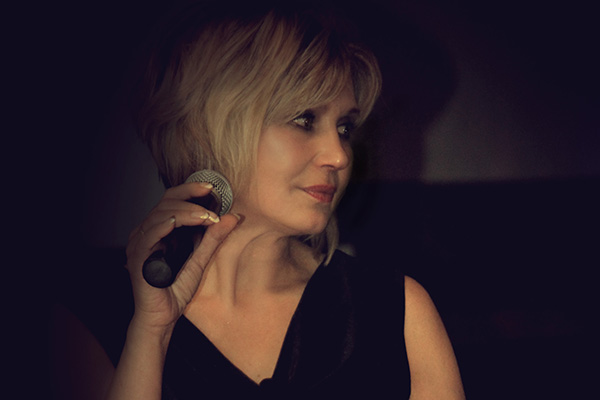
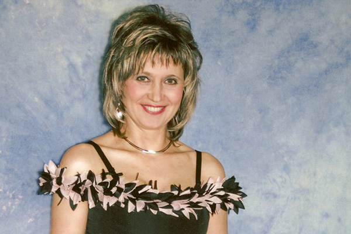
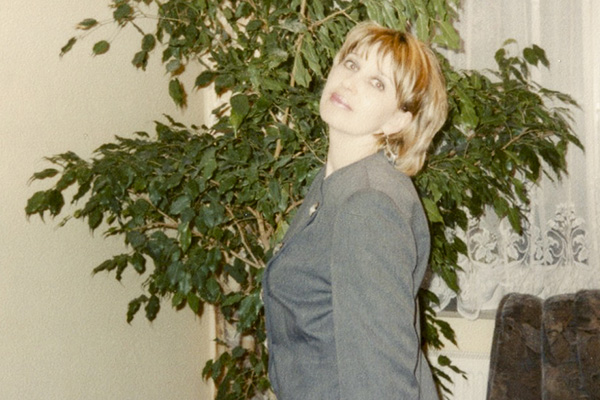
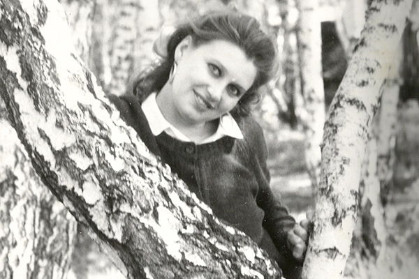
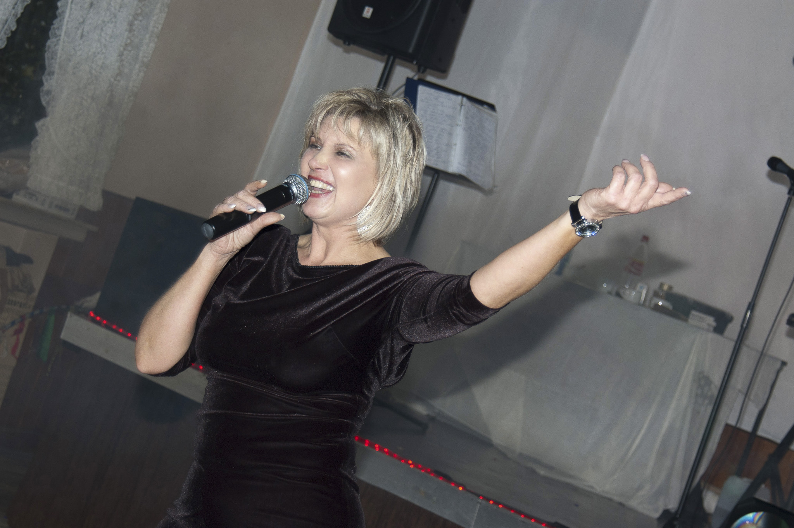
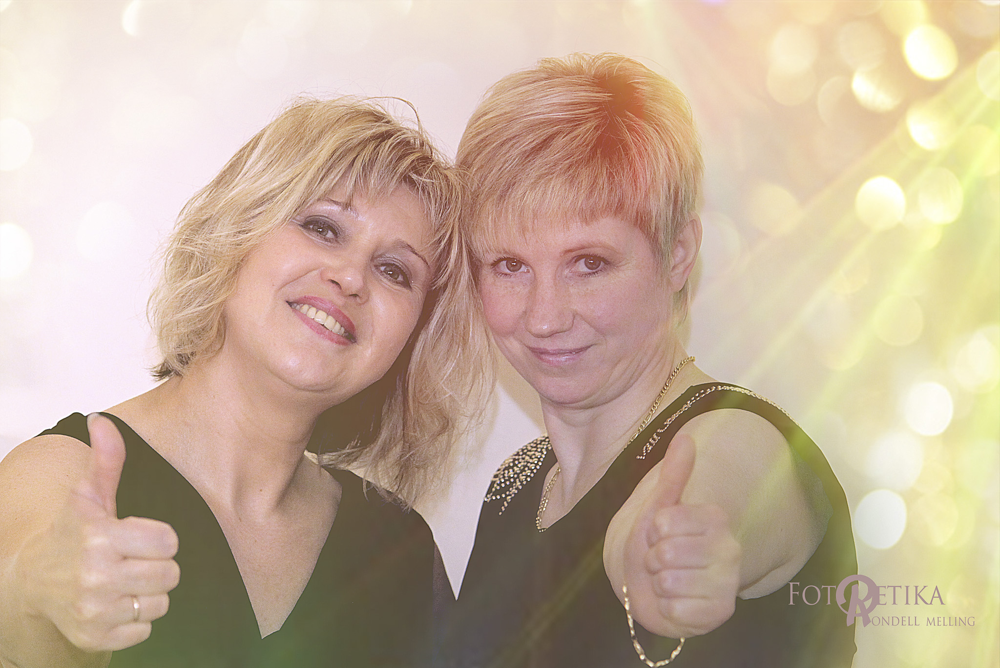

Ольга Клинг - профессиональная ведущая праздников. Образование в области культуры, свободное владение немецким и русским языком. Персональный подход Ольги к проведению мероприятия сделает ваш праздник уникальным. Опыт работы на мероприятиях разного масштаба - от небольших семейных юбилеев на 20 человек до масштабных свадеб на 700 человек и городских мероприятий. Ольга чувствует себя на сцене как дома. Уже более 20 лет она живет со своей семьей в Клоппенбурге и готовится отметить 10-летие работы своего магазина свадебных платьев «Lady Charme». Ольга будет рада быть ведущей на вашем празднике.
ОЛЬГА КЛИНГ
Профессиональная ведущая свадеб, юбилеев и других мероприятий
Профессиональный путь
Карьера Ольги в датах и событиях
2013 - ...
- 
-

-

В 2013 Ольга провела свадьбу с рекордным количеством гостей. 700 человек собралось поздравить новую семью. В 2015 году в эфир канала VOX вышла программа "4 hochzeiten und eine traumreise", снятая в середине 2014 года. Ольга Клинг была ведущей на одной из свадеб, показанных в программе. Все гости отметили невероятную атсмосферу радости и веселья, которую создала Ольга на мероприятии. В 2016 году Ольга споёт на дне Клоппенбурга.
2006-2013


Уже в 2006 году на «Осенний бал Ольги Клинг» пришло 200 человек, а на встречу 2008 года с Ольгой собралось 280 человек. В 2009 году Ольга в первый раз работала на дне Клоппенбурга, где представляла русскую культуру. В 2007 году Ольга решила посвятить всю свою рабочую жизнь свадебной тематике и открыла магазин свадебных и вечерних платьев в Фехте, который в 2013 году переехал в Клоппенбург.
2000-2005
- 
-

-

В 2000 году Ольга начинает сольную карьеру на свадьбах. С тех пор она побывала на немецких, русских, русско-немецких, русско-польских, русско-турецких и глухонемых свадьбах. В 2004 году Ольга начала проводить детские новогодние утренники, а в 2005 году она начала традицию проведения праздников в Клоппенбурге - с тех пор каждый год вы можете посетить праздники Нового Года и Осеннего бала с её участием.
1993-1999
-

- 
-

В 1993 году Ольга с мужем и дочерью переезжает из Омска в Клоппенбург. С 1997 года Ольга начинает работу на Kulturzentrum Elita, где в это время также работали Сергёга ("Чёрный бумер"), Фактор-2, Вадим Кузема. В 1998 году работала на свадьбе вместе с Серёгой "Чёрным бумером".
1985-1993


В 1985 году Ольга начинает работу в ДК Омского Моторостроительного Производственного Объединения им П.И. Баранова. В рамках этой работы она встречается с Аллой Пугачёвой, Валентиной Толкуновой, Алексанром Розенбаумом, Павлом Айданицким. Побывала с гастролями Чехословакии (Прага), ГДР (Берлин), Москве, Киеве. Работала на всех крупных площадках в Омске.
1980-1984
-

-

- 
-

Ещё в детстве Ольга Клинг принимала участие в театральном коллективе. В 1980 году она принимает участие в работе омского ТЮЗа и народного театра. Играет Хозяйку медной горы и Липочку в чеховской "Чайке". В 1981 году Ольгу приглашают в профессиональный театр, а в 1984 году она поступает на учёбу в культурно-просветительное училище.
Галерея
Фотографии, видео и музыка
-

-

- 
-

-

-

- 
-

-

-

Свадебный план
Вдохновение для вашего праздника
| Номер | Действие | Дополнительно |
|---|---|---|
| 1 | Праздничная встреча молодоженов | |
| 2 | Молодожены входят в зал через «туннель любви» - «Туннель» может быть из роз, шариков, и.т.п | «Туннель» может быть из роз, шариков, и.т.п. |
| 3 | Поздравления | |
| 4 | Открытие свадьбы со «свадебной ракетой» | |
| 5 | Первый тост молодоженам | |
| 6 | Вынос свадебного супа: Костюм шеф-повара | Костюм шеф-повара |
| 7 | Открытие свадебного буфета | |
| 8 | Второй тост за родителей молодоженов | |
| 9 | Семейная свеча | |
| 10 | Кража туфли | Баба Яга, Пираты |
| 11 | Первый танец молодоженов. Если вы не определились с танцем или песней - Ольга может вам помочь | Если вы не определились с танцем или песней - Ольга может вам помочь |
| 12 | Сюрприз для невесты | |
| 13 | Кража невесты: Полицейские, Пираты, Гномы | Полицейские, Пираты, Гномы |
| 14 | Хит-парад: Майкл Джексон, Элвис Пресли, Мерлин Монро, Леди Гага, Кэти Перри, PSY, Комбинация, ABBA и.т.п. | Майкл Джексон, Элвис Пресли, Мерлин Монро, Леди Гага, Кэти Перри, PSY, Комбинация, ABBA и.т.п. |
| 15 | Вынос торта с бенгальскими свечамиЕгипетские фараоны, древние греки | Египетские фараоны, древние греки |
| 16 | Снятие фаты в полночь | |
| 17 | Снятие подвязки невесты | |
| 18 | Танец под фатой | |
| 19 | Бросание букета невестой | |
| Дополнительно | ДополнительноСвадебная змейка, Креативные и разноцветные игры |
Контакты
Как со мной связаться
Телефон: +49 (0) 157 714382 65
E-mail: olga.kling.clp@gmail.com
Вы можете найти Ольгу в магазине "Lady Charme".
Адрес: 49661 Cloppenburg, Löninger Straße 26